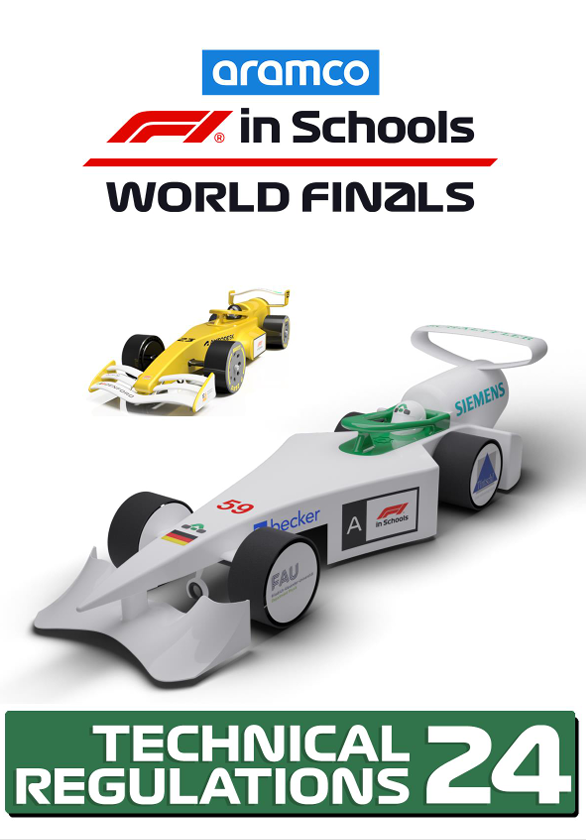
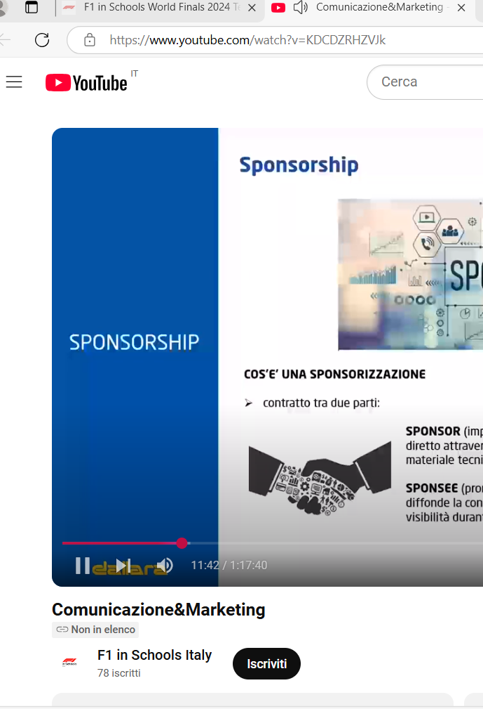
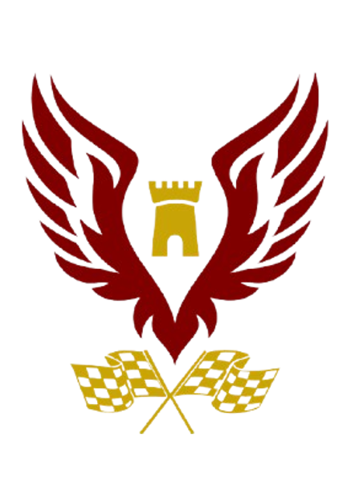
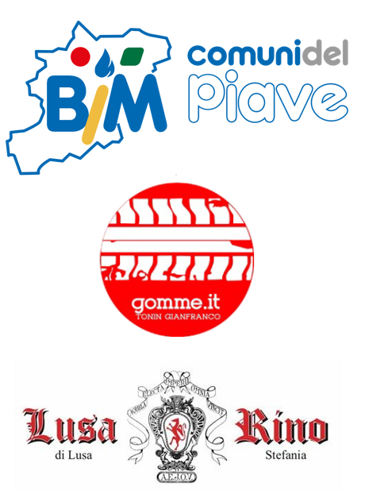
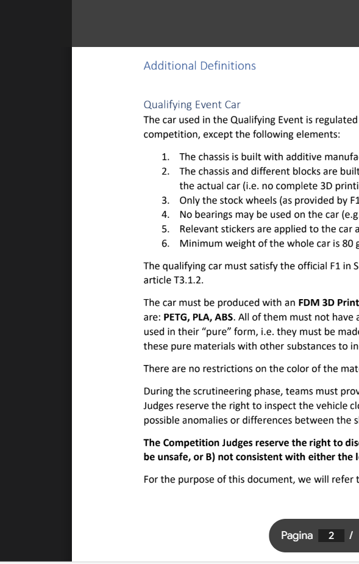
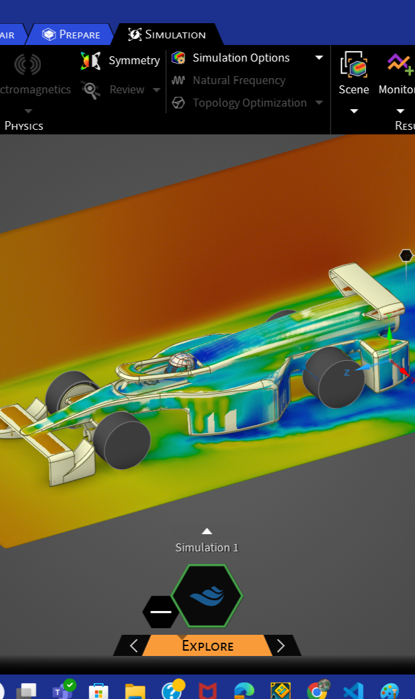
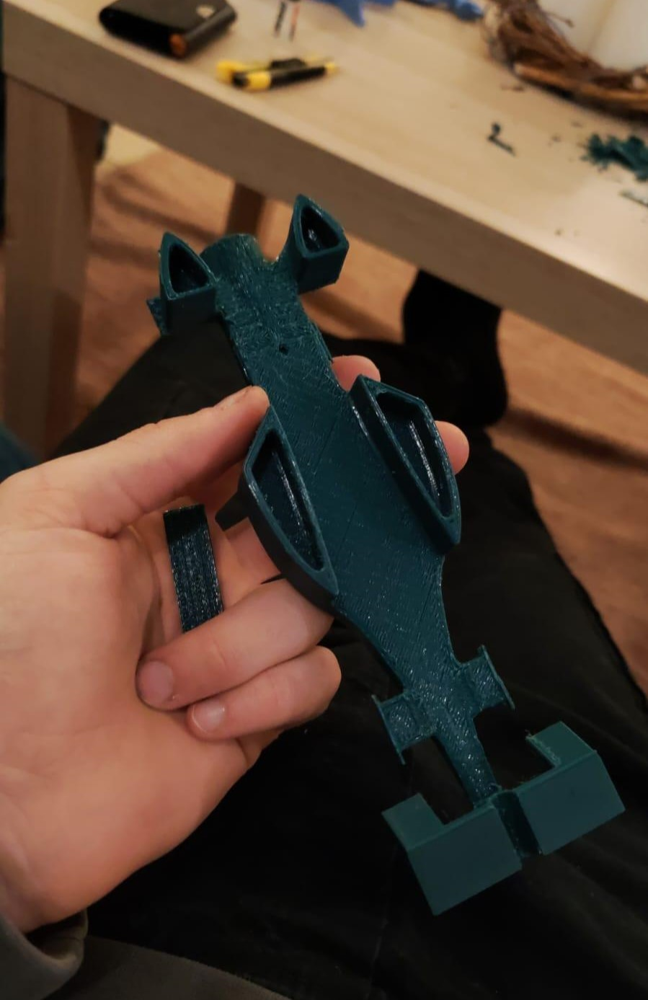

big main image
Alboino Racing
Il primo passo fu quello di leggere il regolamento tecnico, interamente in lingua inglese, relativo a misure di peso e dimensione. Alcune regole hanno reso difficile l'intero percorso, soprattutto perchè se non rispettate, i giudici ci avrebbero poi tolto punti durante la competizione.
Una volta al mese circa, con incontri non regolari, la f1 in schools proponeva webinar informativi in cui venivano spiegati aspetti non evidenti oppure non definiti nel regolamento. Ad esempio, molti incontri online trattavano di areodinamica e di come avremmo dovuto modificare la macchina per renderla il più veloce possibile. Altri davano consigli su questioni economiche, come le strategie più efficaci per trovare degli sponsor.
Un altro passo che ci ha visti molto coinvolti, fu definire la nostra identità, con un nome ed un'immagine che fossero immediatamente riconoscibili. Per questo, come già detto nella sezione Chi siamo, abbiamo scelto il Castello di Alboino, iconico simbolo della città di Feltre, luogo da dove proveniamo. Poi per il logo, abbiamo usato Canva, un sito utile per la creazione di presentazioni, sito nella quale abbiamo cercato le immagini della torre, delle ali e infine delle bandiere.
Avere degli sponsor non è qualcosa di secondario, ma una necessità fondamentale, in quanto sono il nostro unico supporto economico. Per questo progetto ci siamo impegnati a non avere spese che gravassero nè sulla scuola né su di noi studenti. La ricerca per fortuna non è stata difficile ma lunga.
In questa parte viene descritto in inglese cosa succederà durante il giorno della gara, come per esempio i requisiti obbligatori per i partecipanti, gli orari, quanti punti verranno attribuiti ad ogni fase di svilpuppo del progetto...
Se non lo sapessi un portfolio è una presentazione in formato cartaceo, con i contenuti che puoi trovare anche nel nostro sito, ma in versione più dettagliata, che contiene ogni dettaglio riguardante le procedure seguite per prepararci a questa gara, ogni passaggio ed azione svolti per raggiungere l'obiettivo di realizzare la macchina di F1.
I porgrammi usati per lo sviluppo della macchina non sono stati scelti da noi, ma invece provvisti dalla Formula 1 in Schools e sono Fusion 360 e Ansys. Fusion è il programma che abbiamo usato per modellare la machina che è pieno di complessi utilizzi che richiedono un enorme quantità di tempo e dedicazione per imparare. Ansys invece è utilizzato per controllare l'areodinamica e anche se è veramente facile da usare, impararlo non lo fu per ninete a colpa dell'assenza di guide online.
Ora che siamo alla fine del nostro percorso, le uniche cose che mancano da fare sono realizzare la macchina con la stampante 3D che possiede uno dei nostri membri, preparare la presentazione e arrivare alla gara, dove avremo la mattina per prepararci, e il pomeriggio per l'effettiva gara e l'esposizione.
